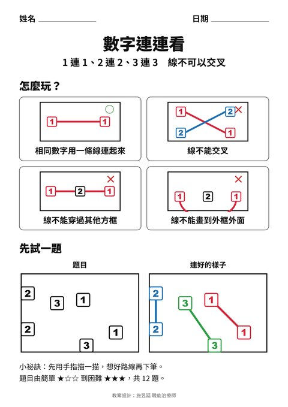
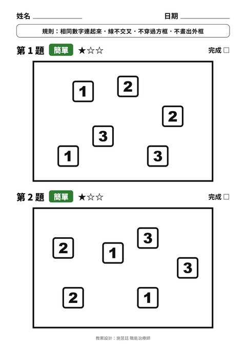
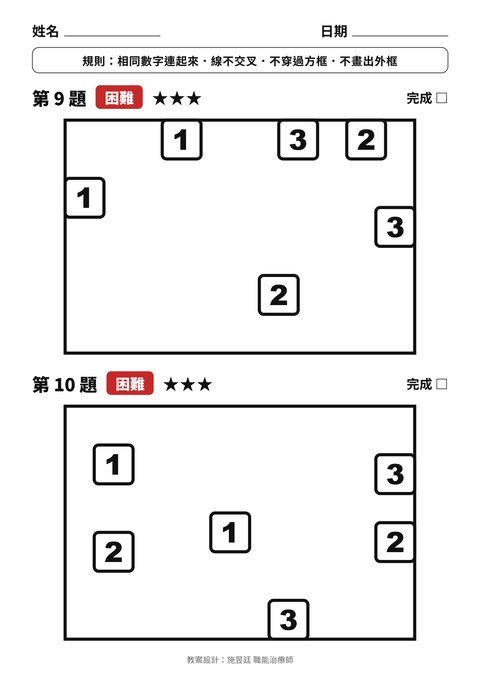

📖 先看玩法
四格圖說明四條規則，再用一題「先試一題」帶長輩熟悉。
1 連 1、2 連 2、3 連 3，線不可以交叉，也不能畫出外框。12 題由簡單到困難，A4 直接列印；第一頁是玩法示範，最後兩頁是解答與帶領者提示。

四格圖說明四條規則，再用一題「先試一題」帶長輩熟悉。

第 1～4 題。數字都在框內，直直連就不會交叉。

第 9～12 題。數字貼著外框，線只能從另一側繞，要先想好順序再下筆。
訓練目標：視覺空間規劃、先想後做的執行功能、手眼協調與握筆畫線的手功能。每題都經過程式驗證一定有解。